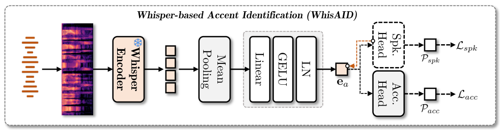
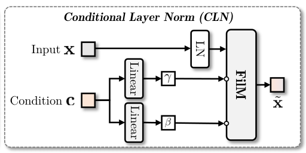
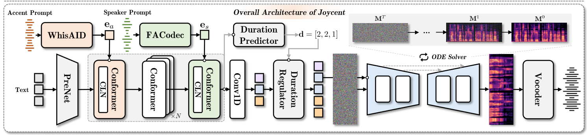
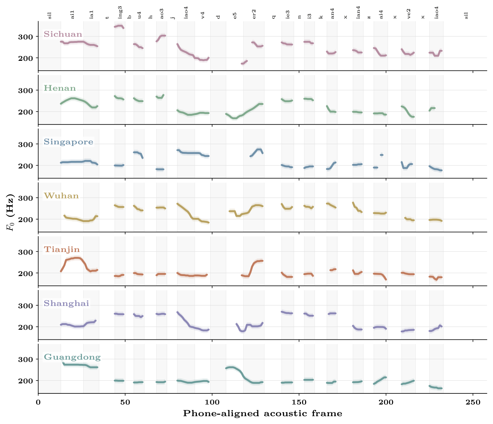

OutputJoycent, baselines, and ablations
METHOD
Separating accent and speaker
throughout synthesis
Joycent treats accent and speaker identity as two independent conditioning signals for speech generation.
It draws on speaker-disentangled accent modeling and layer-specific conditioning: injecting accent information early and speaker information late enables effective accent transfer while preserving the target voice.
Overall architecture of Joycent



Objective and subjective results
W-CS ↑Accent similarity measured with WhisAID.
WU-CS ↑Accent similarity measured with WhisAIDadv.
Spk.-CS ↑Speaker similarity measured with WavLM-Large.
CER ↓Character error rate obtained with Qwen3-ASR-1.7B.
MOS ↑Listener-rated naturalness on a 5-point scale.
SMOS-S ↑Listener-rated speaker similarity on a 4-point scale.
SMOS-A ↑Listener-rated accent similarity on a 4-point scale.
Objective and subjective measures share one polygon. Axes are scaled per metric; hover a model to reveal original values and 95% confidence intervals.
01 · MULTIPLE VOICES
Generating multiple voices
with the same accent
The distinct speaker speaking consistently in the selected accent.
02 · MULTIPLE ACCENTS
Generating multiple accents
with the same voice
The same speaker identity and linguistic content rendered in seven target accents. In the F0 visualization, phone durations are normalized to the maximum duration for phone-level alignment across samples.
InputA shared text and voice · Seven accent prompts
Synthesis text
“哎呀，挺不好教育的，而且你看现在学校。”
Speaker Prompt

OutputSeven accents in the same voice
03 · Cross-accent
Generating cross-accent speech
from independent prompts
Given a speaker prompt and an accent prompt drawn from different accent domains, we study generating cross-accent speech: the voice from the speaker prompt rendered naturally in the accent specified by the independent accent prompt.
04 · MODEL COMPARISONS
Comparisons
We show generated speech comparing our method with baselines and ablations.